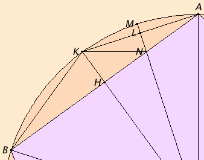

Let ABCDE be a circle, and let the equilateral pentagon ABCDE be inscribed in the circle ABCDE.
I say that the square on the side of the pentagon ABCDE equals the sum of the squares on the side of the hexagon and on that of the decagon inscribed in the circle ABCDE.
Take the center F of the circle, join AF and carry it through to the point G, and join FB. Draw FH from F perpendicular to AB and carry it through to K, join AK and KB, draw FL from F perpendicular to AK, carry it through to M, and join KN.
Since the circumference ABCG equals the circumference AEDG, and in them ABC equals AED, therefore the remainder, the circumference CG, equals the remainder GD.
But CD belongs to a pentagon, therefore CG belongs to a decagon.
And, since FA equals FB, and FH is perpendicular, therefore the angle AFK equals the angle KFB.
Hence the circumference AK equals KB. Therefore the circumference AB is double the circumference BK. Therefore the straight line AK is a side of a decagon. For the same reason AK is double KM.
Now, since the circumference AB is double the circumference BK, while the circumference CD equals the circumference AB, therefore the circumference CD is also double the circumference BK.
But the circumference CD is also double CG, therefore the circumference CG equals the circumference BK. But BK is double KM, since KA is so also, therefore CG is also double KM.
But, further, the circumference CB is also double the circumference BK, for the circumference CB equals BA. Therefore the whole circumference GB is also double BM. Hence the angle GFB is double the angle BFM.
But the angle GFB is double the angle FAB, for the angle FAB equals the angle ABF. Therefore the angle BFN equals the angle FAB.
But the angle ABF is common to the two triangles ABF and BFN, therefore the remaining angle AFB equals the remaining angle BNF. Therefore the triangle ABF is equiangular with the triangle BFN.
Therefore, proportionally the straight line AB is to BF as FB is to BN. Therefore the rectangle AB by BN equals the square on BF.
Again, since AL equals LK, while LN is common and at right angles, therefore the base KN equals the base AN. Therefore the angle LKN also equals the angle LAN.
But the angle LAN equals the angle KBN, therefore the angle LKN also equals the angle KBN.
And the angle at A is common to the two triangles AKB and AKN. Therefore the remaining angle AKB equals the remaining angle KNA.
Therefore the triangle KBA is equiangular with the triangle KNA. Therefore, proportionally the straight line BA is to AK as KA is to AN.
Therefore the rectangle BA by AN equals the square on AK.
But the rectangle AB by BN was also proved equal to the square on BF, therefore the sum of the rectangle AB by BN and the rectangle BA by AN, that is, the square on BA, equals the sum of the squares on BF and AK.
And BA is a side of the pentagon, BF of the hexagon, and AK of the decagon.
Therefore, if an equilateral pentagon is inscribed in a circle, then the square on the side of the pentagon equals the sum of the squares on the sides of the hexagon and the decagon inscribed in the same circle.
